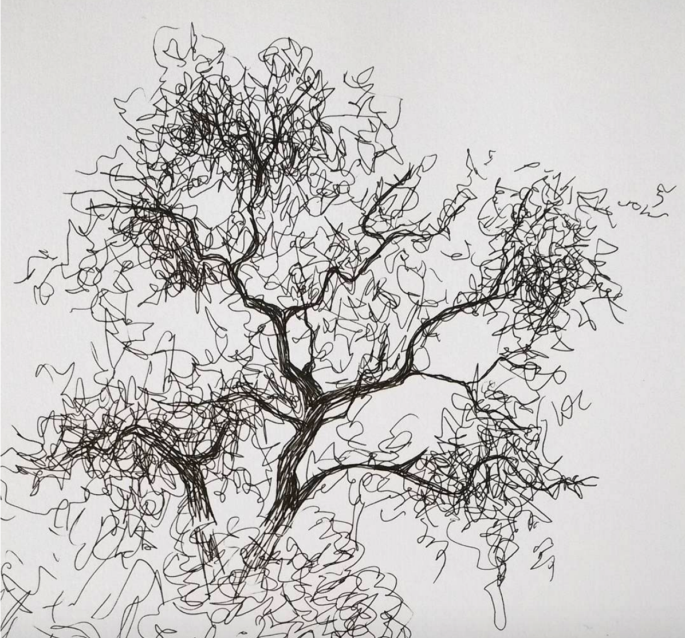

Tintas
El acercamiento a las tintas surge a partir de la motivación y enseñanza de la artista Claudia Missana, quien introduce la gráfica monocromática y el estudio de la escala de grises. Los focos de este campo son la luz y la forma natural.
El acercamiento a las tintas surge a partir de la motivación y enseñanza de la artista Claudia Missana, quien introduce la gráfica monocromática y el estudio de la escala de grises. Los focos de este campo son la luz y la forma natural.
